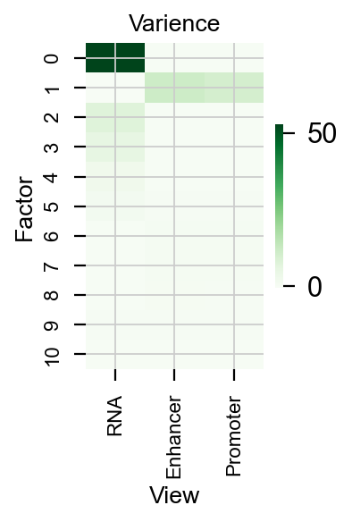
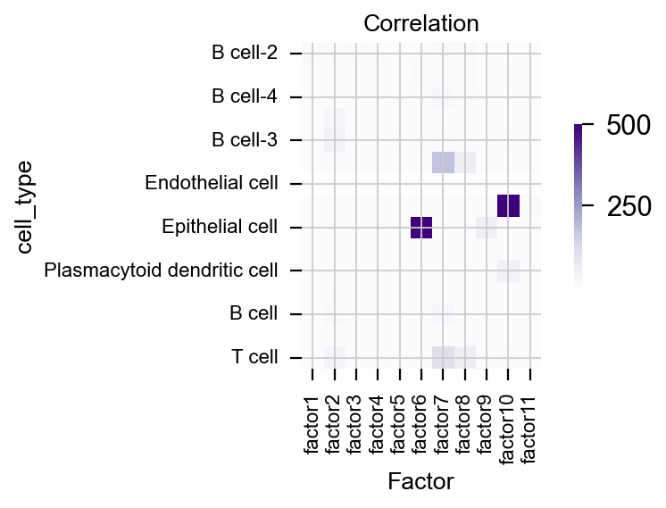
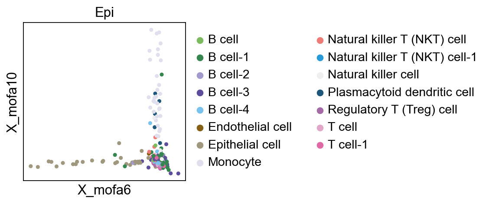
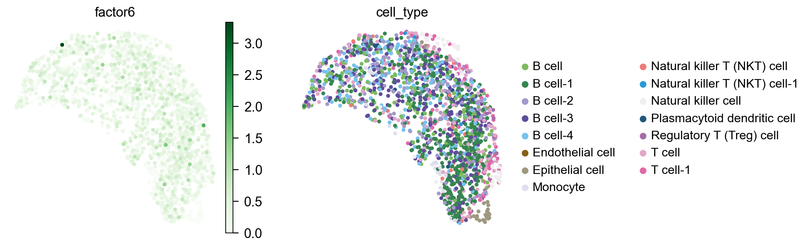
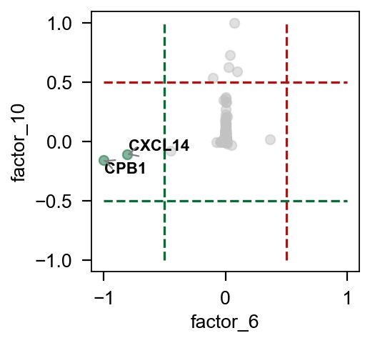
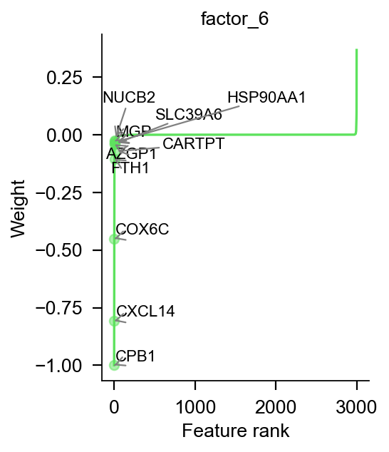
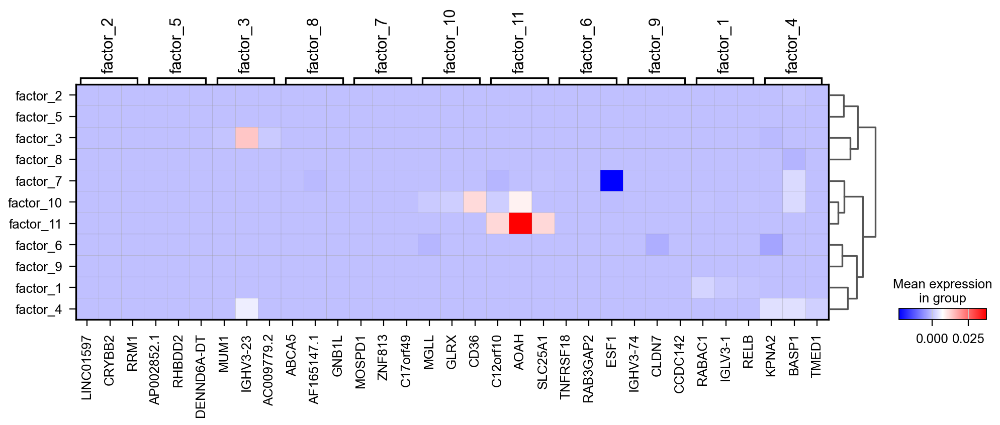

Multi omics analysis by MOFA#
MOFA is a factor analysis model that provides a general framework for the integration of multi-omic data sets in an unsupervised fashion.
This tutorial focuses on how to perform mofa in multi-omics like scRNA-seq and scATAC-seq
Paper: MOFA+: a statistical framework for comprehensive integration of multi-modal single-cell data
Code: bioFAM/mofapy2
Colab_Reproducibility：https://colab.research.google.com/drive/1UPGQA3BenrC-eLIGVtdKVftSnOKIwNrP?usp=sharing
Part.1 MOFA Model#
In this part, we construct a model of mofa by scRNA-seq and scATAC-seq
import omicverse as ov
rna=ov.utils.read('data/sample/rna_p_n_raw.h5ad')
atac=ov.utils.read('data/sample/atac_p_n_raw.h5ad')
/Users/fernandozeng/miniforge3/envs/scbasset/lib/python3.8/site-packages/phate/__init__.py
rna,atac
(AnnData object with n_obs × n_vars = 1876 × 25596
obs: 'Type', 'sample',
AnnData object with n_obs × n_vars = 1876 × 71272
obs: 'Type', 'sample')
We only need to add anndata to ov.single.mofa to construct the base model
test_mofa=ov.single.pyMOFA(omics=[rna,atac],
omics_name=['RNA','ATAC'])
test_mofa.mofa_preprocess()
test_mofa.mofa_run(outfile='models/brac_rna_atac.hdf5')
#########################################################
### __ __ ____ ______ ###
### | \/ |/ __ \| ____/\ _ ###
### | \ / | | | | |__ / \ _| |_ ###
### | |\/| | | | | __/ /\ \_ _| ###
### | | | | |__| | | / ____ \|_| ###
### |_| |_|\____/|_|/_/ \_\ ###
### ###
#########################################################
Groups names not provided, using default naming convention:
- group1, group2, ..., groupG
Successfully loaded view='RNA' group='group0' with N=1876 samples and D=25596 features...
Successfully loaded view='ATAC' group='group0' with N=1876 samples and D=71272 features...
Warning: 8795 features(s) in view 0 have zero variance, consider removing them before training the model...
Warning: 34 features(s) in view 1 have zero variance, consider removing them before training the model...
Model options:
- Automatic Relevance Determination prior on the factors: True
- Automatic Relevance Determination prior on the weights: True
- Spike-and-slab prior on the factors: False
- Spike-and-slab prior on the weights: True
Likelihoods:
- View 0 (RNA): gaussian
- View 1 (ATAC): gaussian
GPU mode is activated, but GPU not found... switching to CPU mode
For GPU mode, you need:
1 - Make sure that you are running MOFA+ on a machine with an NVIDIA GPU
2 - Install CUPY following instructions on https://docs-cupy.chainer.org/en/stable/install.html
######################################
## Training the model with seed 112 ##
######################################
ELBO before training: -2415164577.49
Iteration 1: time=55.65, ELBO=-21568895.23, deltaELBO=2393595682.263 (99.10693890%), Factors=19
Iteration 2: time=55.70, ELBO=53947093.49, deltaELBO=75515988.721 (3.12674297%), Factors=18
Iteration 3: time=55.13, ELBO=55272104.20, deltaELBO=1325010.708 (0.05486213%), Factors=17
Iteration 4: time=50.87, ELBO=55846669.26, deltaELBO=574565.064 (0.02378989%), Factors=16
Iteration 5: time=50.76, ELBO=56054695.49, deltaELBO=208026.230 (0.00861334%), Factors=16
Iteration 6: time=46.63, ELBO=56193608.97, deltaELBO=138913.480 (0.00575172%), Factors=16
Part.2 MOFA Analysis#
After get the model by mofa, we need to analysis the factor about different omics, we provide some method to do this
load data#
import omicverse as ov
ov.utils.ov_plot_set()
/Users/fernandozeng/miniforge3/envs/scbasset/lib/python3.8/site-packages/phate/__init__.py
rna=ov.utils.read('data/sample/rna_test.h5ad')
add value of factor to anndata#
rna=ov.single.factor_exact(rna,hdf5_path='data/sample/MOFA_POS.hdf5')
rna
AnnData object with n_obs × n_vars = 1792 × 3000
obs: 'Type', 'sample', 'cell_type', 'n_genes', 'n_genes_by_counts', 'total_counts', 'total_counts_mt', 'pct_counts_mt', 'factor1', 'factor2', 'factor3', 'factor4', 'factor5', 'factor6', 'factor7', 'factor8', 'factor9', 'factor10', 'factor11'
var: 'n_cells', 'mt', 'n_cells_by_counts', 'mean_counts', 'pct_dropout_by_counts', 'total_counts', 'highly_variable', 'highly_variable_rank', 'means', 'variances', 'variances_norm'
uns: 'hvg'
analysis of the correlation between factor and cell type#
ov.single.factor_correlation(adata=rna,cluster='cell_type',factor_list=[1,2,3,4,5])
| factor1 | factor2 | factor3 | factor4 | factor5 | |
|---|---|---|---|---|---|
| B cell-2 | 9.078459 | 5.625337 | 8.424565 | 7.768767 | 0.268084 |
| B cell-1 | 0.489567 | 3.898347 | 0.115866 | 0.854649 | 0.686837 |
| B cell-4 | 0.279002 | 3.701674 | 0.487245 | 0.631280 | 0.205712 |
| Natural killer cell | 1.127901 | 27.896554 | 0.235219 | 0.241705 | 0.282893 |
| B cell-3 | 0.706249 | 40.881023 | 2.267589 | 0.382177 | 5.123728 |
| T cell-1 | 0.704842 | 3.701813 | 0.464042 | 0.396243 | 0.459828 |
| Endothelial cell | NaN | NaN | NaN | NaN | NaN |
| Monocyte | 0.248902 | 0.284968 | 0.147168 | 0.399443 | 0.132685 |
| Epithelial cell | 0.435818 | 2.957245 | 0.183706 | 0.366285 | 0.225828 |
| Natural killer T (NKT) cell-1 | 0.119266 | 0.276104 | 0.111210 | 0.030626 | 0.097991 |
| Plasmacytoid dendritic cell | 0.019003 | 0.052997 | 0.431551 | 0.024616 | 0.067029 |
| Regulatory T (Treg) cell | 0.553421 | 7.303644 | 0.323052 | 0.252761 | 0.187171 |
| B cell | 1.096582 | 12.407881 | 0.154599 | 0.827906 | 0.495789 |
| Natural killer T (NKT) cell | 0.039153 | 0.765500 | 0.243345 | 0.035279 | 0.093851 |
| T cell | 1.763401 | 32.202576 | 0.854274 | 0.870854 | 0.627218 |
Get the gene/feature weights of different factor#
ov.single.get_weights(hdf5_path='data/sample/MOFA_POS.hdf5',view='RNA',factor=1)
| feature | weights | abs_weights | sig | |
|---|---|---|---|---|
| 0 | b'FAM174B' | -2.911107e-10 | 2.911107e-10 | - |
| 1 | b'SYNE2' | -3.744153e-09 | 3.744153e-09 | - |
| 2 | b'LUZP1' | -1.840838e-10 | 1.840838e-10 | - |
| 3 | b'GGT1' | -3.171818e-10 | 3.171818e-10 | - |
| 4 | b'LINC02210' | -4.588388e-10 | 4.588388e-10 | - |
| ... | ... | ... | ... | ... |
| 2995 | b'TREM2' | 4.046089e-11 | 4.046089e-11 | + |
| 2996 | b'CPVL' | 1.353563e-10 | 1.353563e-10 | + |
| 2997 | b'MIPEP' | -1.360450e-11 | 1.360450e-11 | - |
| 2998 | b'INO80E' | -4.721143e-09 | 4.721143e-09 | - |
| 2999 | b'RABAC1' | 2.386149e-03 | 2.386149e-03 | + |
3000 rows × 4 columns
Part.3 MOFA Visualize#
To visualize the result of mofa, we provide a series of function to do this.
pymofa_obj=ov.single.pyMOFAART(model_path='data/sample/MOFA_POS.hdf5')
We get the factor of each cell at first
pymofa_obj.get_factors(rna)
rna
......Add factors to adata and store to adata.obsm["X_mofa"]
AnnData object with n_obs × n_vars = 1792 × 3000
obs: 'Type', 'sample', 'cell_type', 'n_genes', 'n_genes_by_counts', 'total_counts', 'total_counts_mt', 'pct_counts_mt', 'factor1', 'factor2', 'factor3', 'factor4', 'factor5', 'factor6', 'factor7', 'factor8', 'factor9', 'factor10', 'factor11'
var: 'n_cells', 'mt', 'n_cells_by_counts', 'mean_counts', 'pct_dropout_by_counts', 'total_counts', 'highly_variable', 'highly_variable_rank', 'means', 'variances', 'variances_norm'
uns: 'hvg'
obsm: 'X_mofa'
We can also plot the varience in each View
pymofa_obj.plot_r2()
(<Figure size 160x240 with 2 Axes>,
<Axes: title={'center': 'Varience'}, xlabel='View', ylabel='Factor'>)
{kind=link}

pymofa_obj.get_r2()
| RNA | Enhancer | Promoter | |
|---|---|---|---|
| 0 | 52.653359 | 0.020433 | 0.030287 |
| 1 | -0.427822 | 11.423973 | 10.044684 |
| 2 | 7.485323 | 0.042972 | 0.044618 |
| 3 | 5.582933 | 0.029609 | 0.040193 |
| 4 | 2.447518 | 0.084279 | 0.102553 |
| 5 | 1.264806 | 0.379936 | 0.315503 |
| 6 | 0.142767 | 0.743871 | 0.637848 |
| 7 | 0.066169 | 0.717554 | 0.653633 |
| 8 | 0.061457 | 0.451830 | 0.363793 |
| 9 | 0.322288 | 0.275757 | 0.240563 |
| 10 | 0.132726 | 0.044343 | 0.059752 |
Visualize the correlation between factor and celltype#
pymofa_obj.plot_cor(rna,'cell_type')
(<Figure size 480x240 with 2 Axes>,
<Axes: title={'center': 'Correlation'}, xlabel='Factor', ylabel='cell_type'>)
{kind=link}

We found that factor6 is correlated to Epithelial
pymofa_obj.plot_factor(rna,'cell_type','Epi',figsize=(3,3),
factor1=6,factor2=10,)
{kind=link}

(<Figure size 240x240 with 1 Axes>,
<Axes: title={'center': 'Epi'}, xlabel='X_mofa6', ylabel='X_mofa10'>)
import scanpy as sc
sc.pp.neighbors(rna)
sc.tl.umap(rna)
sc.pl.embedding(
rna,
basis="X_umap",
color=["factor6","cell_type"],
frameon=False,
ncols=2,
#palette=ov.utils.pyomic_palette(),
show=False,
cmap='Greens',
vmin=0,
)
#plt.savefig("figures/umap_factor6.png",dpi=300,bbox_inches = 'tight')
computing neighbors
using 'X_pca' with n_pcs = 50
finished: added to `.uns['neighbors']`
`.obsp['distances']`, distances for each pair of neighbors
`.obsp['connectivities']`, weighted adjacency matrix (0:00:00)
computing UMAP
finished: added
'X_umap', UMAP coordinates (adata.obsm) (0:00:01)
[<Axes: title={'center': 'factor6'}, xlabel='X_umap1', ylabel='X_umap2'>,
<Axes: title={'center': 'cell_type'}, xlabel='X_umap1', ylabel='X_umap2'>]
{kind=link}

pymofa_obj.plot_weight_gene_d1(view='RNA',factor1=6,factor2=10,)
(<Figure size 240x240 with 1 Axes>,
<Axes: xlabel='factor_6', ylabel='factor_10'>)
{kind=link}

pymofa_obj.plot_weights(view='RNA',factor=6,color='#5de25d',
ascending=True)
(<Figure size 240x320 with 1 Axes>,
<Axes: title={'center': 'factor_6'}, xlabel='Feature rank', ylabel='Weight'>)
{kind=link}

pymofa_obj.plot_top_feature_heatmap(view='RNA')
ranking genes
finished: added to `.uns['rank_genes_groups']`
'names', sorted np.recarray to be indexed by group ids
'scores', sorted np.recarray to be indexed by group ids
'logfoldchanges', sorted np.recarray to be indexed by group ids
'pvals', sorted np.recarray to be indexed by group ids
'pvals_adj', sorted np.recarray to be indexed by group ids (0:00:00)
WARNING: dendrogram data not found (using key=dendrogram_Factor). Running `sc.tl.dendrogram` with default parameters. For fine tuning it is recommended to run `sc.tl.dendrogram` independently.
WARNING: You’re trying to run this on 3000 dimensions of `.X`, if you really want this, set `use_rep='X'`.
Falling back to preprocessing with `sc.pp.pca` and default params.
computing PCA
with n_comps=21
finished (0:00:00)
Storing dendrogram info using `.uns['dendrogram_Factor']`
{'mainplot_ax': <Axes: >,
'group_extra_ax': <Axes: >,
'gene_group_ax': <Axes: >,
'color_legend_ax': <Axes: title={'center': 'Mean expression\nin group'}>}
{kind=link}
